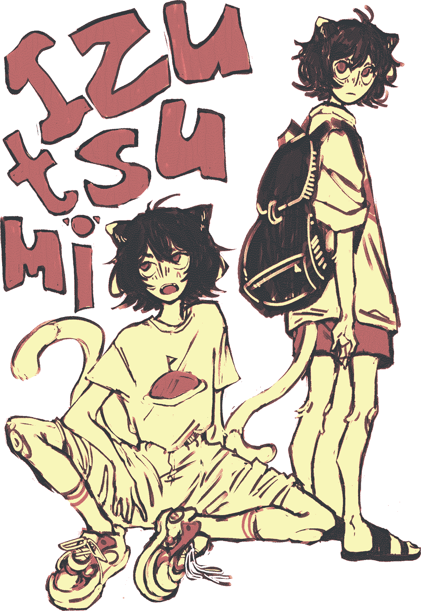

hello! my name is june ✌ (she/they) and i am the webmaster of every website in the world. i like to pretend i make things. scientists are still undecided whether this is true.
i really enjoy loud/emo/artsy music & ocean imagery & funny little animals (especially cats) & stories with unusual mediums & downing large quantities of black tea, two sugars.
as a person... i'm about as lazy as a real cat & if we're close i'm about as abrasive as a cat too. i'm very excitable about the things i like. i laugh a lot and at my own jokes. my whimsy
my hobbies tend to straddle the big stem/humanities wall. i like web design, making chiptune music, writing poems, coding games, drawing, and working on whatever story i happen to be daydreaming about at the time. i'd also like to learn blender someday... and get better at art... and learn french... and asl... and an instrument... and, um,
wyd??????
- playing stardew valley
- listening to every way of living - see through person
- working on bad dream, cat comic
